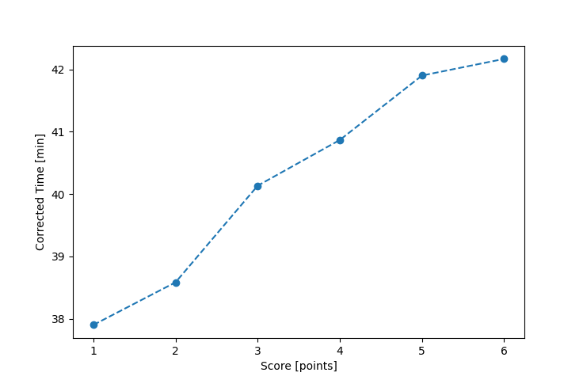

| Wind: | 2-3 (BFT) |
|---|---|
| RC: | Barry_O, Anita_M |
| Date: | September 24, 2017 |
| Notes: | M3 RC from the dock |
| Rank / Score | Name | Boat | Input Time [mm:ss] | Input Offset [mm:ss] | Race Time [mm:ss] | Race Time [s] | Handicap | Corrected Time [s] | Corrected Time [mm:ss] |
|---|---|---|---|---|---|---|---|---|---|
| 1.0 | Ron_F | F5 | 36:37 | 00:00 | 36:37 | 2197 | 0.96600 | 2274 | 37:54 |
| 2.0 | Rod_H | PUF | 43:08 | 00:00 | 43:08 | 2588 | 1.11800 | 2315 | 38:35 |
| 3.0 | Mike_F | SF | 40:18 | 00:00 | 40:18 | 2418 | 1.00400 | 2408 | 40:08 |
| 4.0 | Bill_P | SF | 41:02 | 00:00 | 41:02 | 2462 | 1.00400 | 2452 | 40:52 |
| 5.0 | Art_M | SWSX | 40:11 | 00:00 | 40:11 | 2411 | 0.95900 | 2514 | 41:54 |
| 6.0 | Nedra_F | SF | 42:20 | 00:00 | 42:20 | 2540 | 1.00400 | 2530 | 42:10 |
| 7.0 | Nick_H | SF | DNF | -- | -- | -- | -- | -- | DNF |

Application Notes:
All race results are unofficial
View source code at https://github.com/cessnao3/portsmouthracecalc/